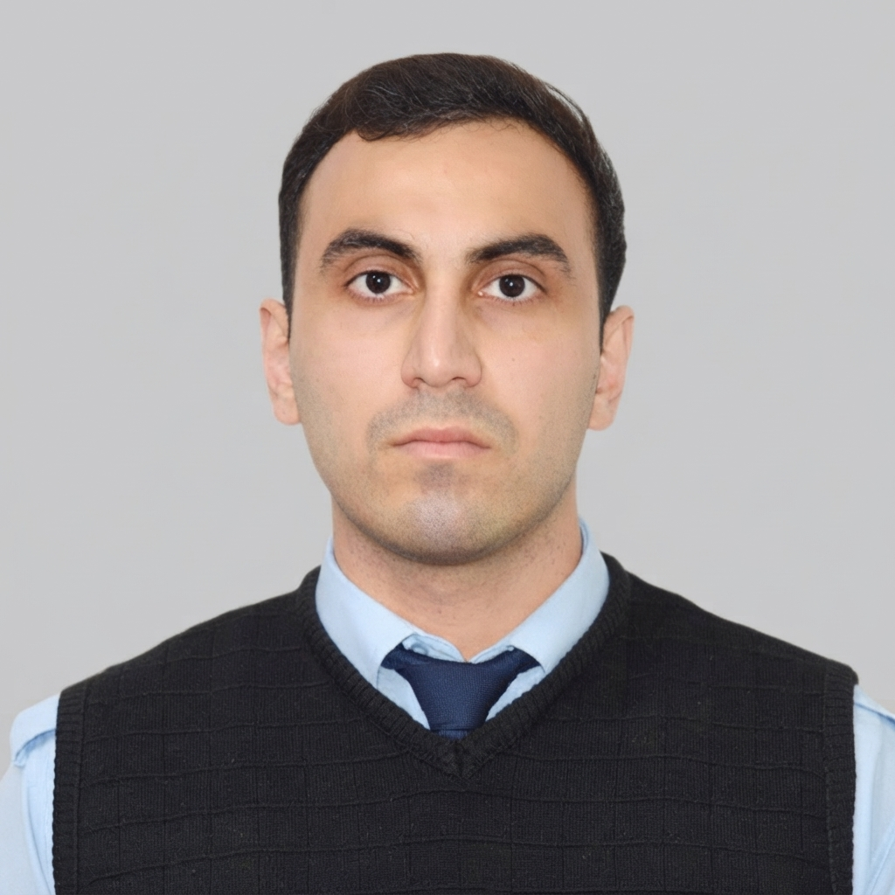

MƏLUMAT ANALİTİKİ · MAŞIN ÖYRƏNMƏSİ · SÜNİ İNTELLEKT
Agro Food Investment MMC-də Məlumat Analitiki

Mən hazırda Agro Food Investment MMC-də Məlumat Analitiki kimi çalışıram, burada məlumatların təhlili, hesabatlılıq və data əsaslı proseslərlə məşğulam.
Məlumatlara olan marağım ənənəvi hesabatlardan daha dərinə gedir. Həmişə qanunauyğunluqları başa düşmək, proqnozlaşdırıcı modellər qurmaq və maşın öyrənməsi ilə problemləri həll etmək məni cəlb etmişdir.
Məqsədim Məlumat Analizindən Maşın Öyrənməsi və Süni İntellekt Mühəndisliyinə doğru irəliləməkdir.
Tamamlanmış layihə
Kredit kartı üzrə borcun ödənilməməsi riskini proqnozlaşdırmağa və modelin qərarlarına təsir edən amilləri anlamağa yönəlmiş maşın öyrənməsi layihəsi.
Şəkillər əsasında bitki xəstəliklərini təsnif etmək üçün dərin öyrənmə və transfer learning üsullarından istifadə edən kompüter görmə layihəsi.
Əməliyyat xarakterli kənd təsərrüfatı məlumatlarını faydalı içgörülərə çevirməyə yönəlmiş məlumat analizi və avtomatlaşdırma konsepsiyaları.
LAYİHƏYƏ BAX →Məlumat, maşın öyrənməsi və süni intellekt ilə maraqlanırsınız? Mənimlə əlaqə saxlamaqdan çəkinməyin.